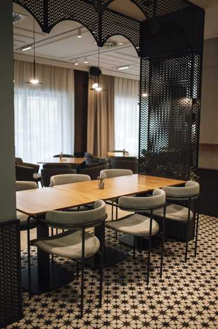
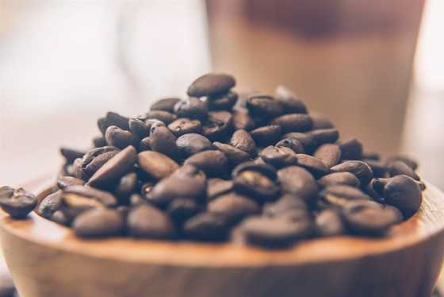
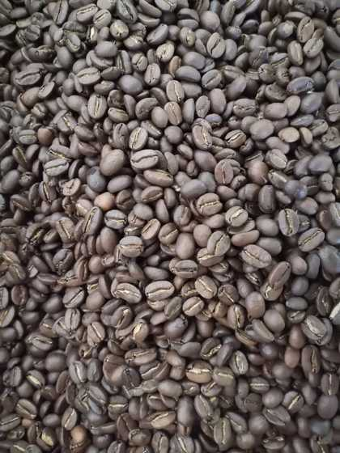
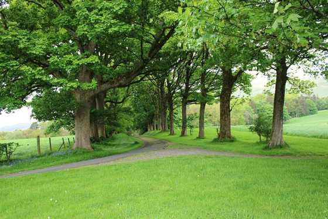
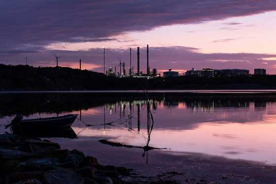

COFFEE STAND / 佐賀県伊万里市脇田町
WILL COFFEE
子どもたちの声がすぐそばにある場所で、本格エスプレッソをひとり分の「ひと息」に。
コンセプト文は、Instagramで確認できた紹介内容をもとにした制作側のイメージです。

ABOUT
保育所のそばの、コーヒースタンド。
WILL COFFEEは、保育所「エンジェル保育所」と姉妹施設「こどもデイサービスきらり」のそばで営業するコーヒースタンドです。Instagramの紹介文では、本格エスプレッソをベースにしたメニューを中心に、多くのドリンクを用意していると案内されています。
- 場所: 伊万里市脇田町。「こどもデイサービスきらり」の裏手(Instagramの記載による)
- 特徴: 本格エスプレッソがベースのドリンク
- 店名「WILL」の意味やオーナーの想いは確認できていないため、ここでは触れていません。

MENU
エスプレッソを中心に、多彩なドリンク。
メニューの詳細・価格・営業時間は確認できていないため、準備中です。下の写真は雰囲気を伝えるイメージです。

エスプレッソ系
本格エスプレッソがベース
詳細は準備中
コーヒー・ドリンク
多くのドリンクを用意
詳細は準備中
営業時間・定休日
準備中





VOICE
こんなお声が届くカフェに(イメージ)
イメージ例
お迎えの帰りに寄れるのがうれしいです。エスプレッソの香りで一日の気持ちが切り替わります。
イメージ例
しっかりした苦味の中にまろやかさがあって、ついもう一杯頼みたくなる味でした。
イメージ例
ドリンクの種類が多くて迷いましたが、どれも気軽に楽しめそうで次の楽しみができました。
上記は制作側が作成したイメージ例で、実在のお客様の声ではありません。